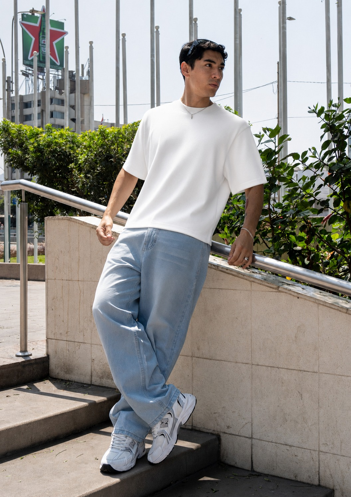

Corte amplio, caída urbana y presencia streetwear. Diseñado para verse fuerte, sentirse cómodo y durar uso tras uso.
También disponible Oversize → más estructurado, más volumen
Look principal Vista completaConstrucción pensada para mantener la silueta baggy original. La forma no se pierde con el lavado ni con el uso constante.
Forma duraderaEl denim premium permite una caída urbana que acompaña el cuerpo en movimiento sin verse forzado. Mejora con el uso.
Comodidad realCosturas dobles en zonas críticas, remaches metálicos y bolsillos reforzados. Pensado para aguantar el desgaste del día a día.
DurabilidadTela densa, fresca y noble. Respira como debe respirar un denim de verdad.
TelaDoble pespunte en bolsillos, entrepierna y dobladillo. Donde otros se rompen, este aguanta.
ConstrucciónEn puntos de tensión críticos. Refuerzo que no ves pero que se siente lavado tras lavado.
RefuerzoProceso controlado por lote. Color uniforme y acabado que no destinta después de un par de lavadas.
AcabadoDos colecciones — tómalos como una paleta completa para combinar con cualquier outfit, de día o noche.
Tonalidad cruda y luminosa, fresca para outfits de verano. Combina perfecto con t-shirts blancas, beige y looks minimalistas.
El baggy tiene una silueta amplia, con más aire en la pierna y una caída relajada. No busca marcar el cuerpo: busca presencia, movimiento y un look streetwear más pesado.
Combínalo con polo oversized, hoodie y zapatillas chunky o skate shoes. Funciona muy bien con lavados claros y fríos.
Cada lavado tiene un propósito estético distinto. Conoce las diferencias para elegir el que mejor encaja con tu estilo.
Un lavado claro con efecto desgastado uniforme. Aporta una estética urbana, relajada y fácil de combinar. Perfecto para outfits casuales de día.
Sigue estas indicaciones y el jean te durará temporadas, no solo meses.